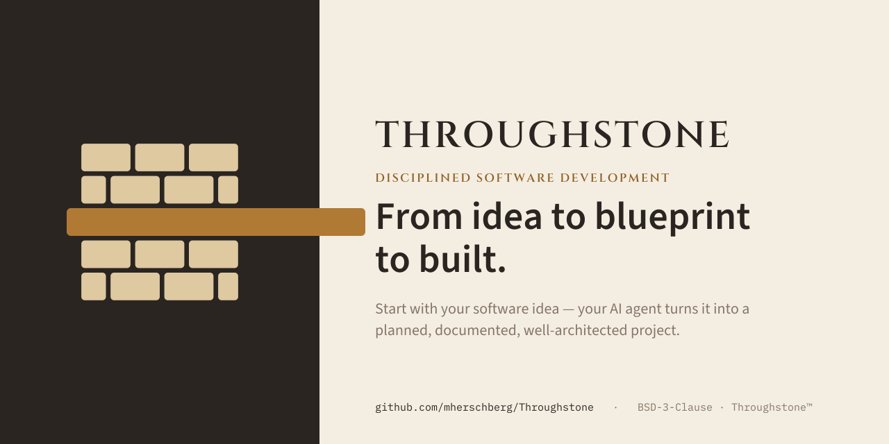

Start with your software idea. Throughstone and your AI coding agent turn it into a planned, documented, well-architected project. Each step is turnkey and the system guides you throughout the process.

The architecture you lay down at the start is carried through every phase, STEP, and check-in.
The first step produces architecture docs and decision records — no code. You begin from a plan you can read and question.
Every meaningful choice is written down as a decision record, not buried in a chat log — so the “why” survives.
Build proceeds in phases → STEPs → substeps, each a runnable unit with check-ins, so progress stays reviewable.
You want to ship real software without inheriting a pile of generated code you don’t understand.
You want the project-shaping discipline that turns a prompt into an architecture and a plan.
Hand it to the juniors — and to everyone who keeps asking “how do I actually start building with AI?”
Run the wizard once, then hand the project to your AI agent in plain English. It drafts your architecture and then guides you through the code creation.